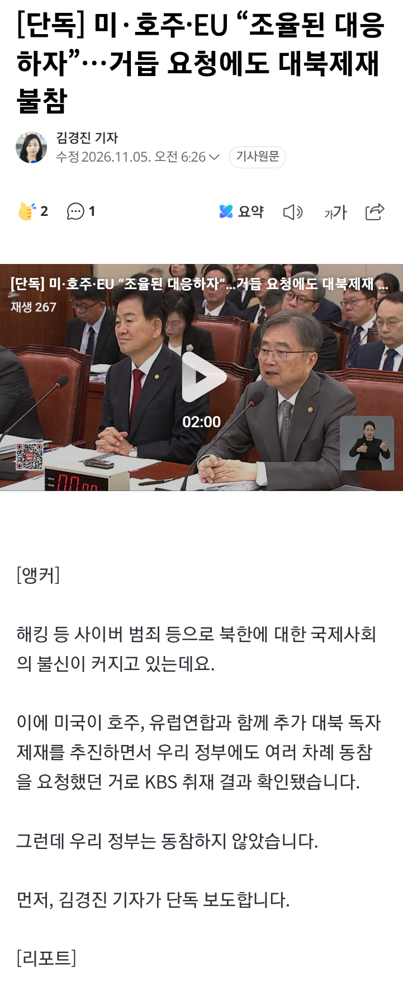
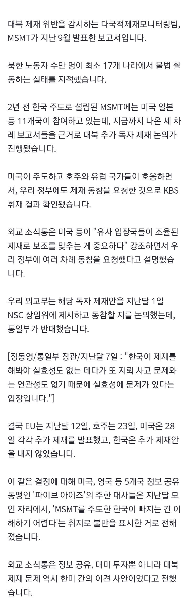
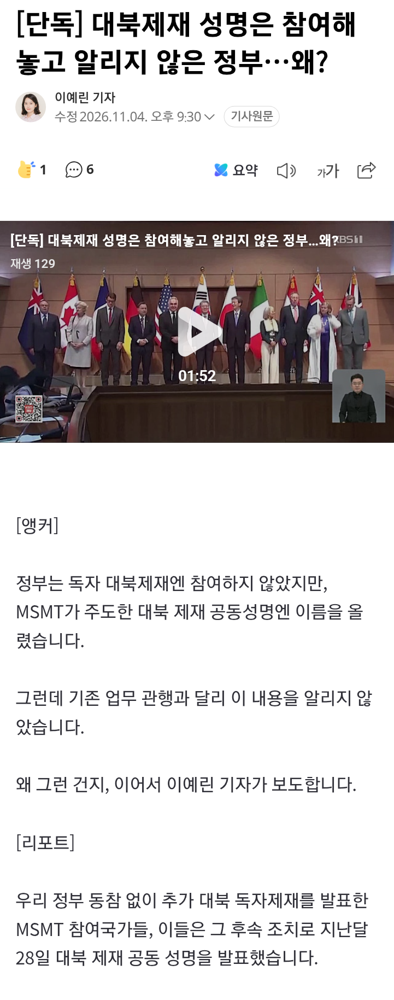
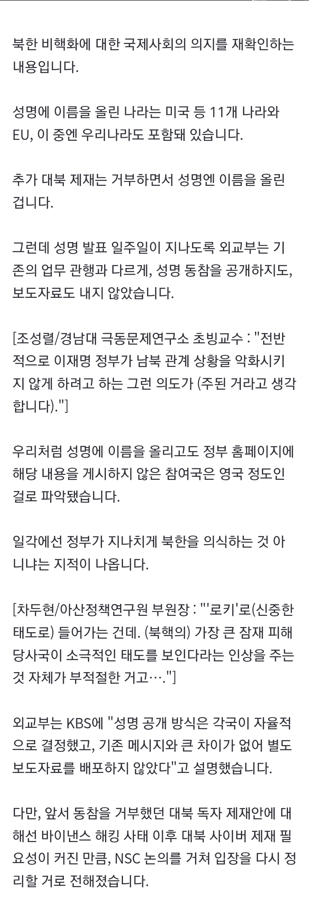

https://n.news.naver.com/article/056/0012287361 [단독] 미·호주·EU “조율된 대북제재 필요” 거듭 요청에도 한국은 불참바이낸스 가상자산 탈취 사건을 계기로 북한의 사이버 범죄와 불법 외화벌이에 대한 국제사회의 경계가 높아지고 있습니다. 탈취한 가상자산과 해외 노동자의 수입 등이 북한의 핵·미사일 개발 자금줄로 활용된다는 것이 국제사n.news.naver.comhttps://n.news.naver.com/article/056/0012287614?sid=100 [단독] 미·호주·EU “조율된 대응하자”…거듭 요청에도 대북제재 불참해킹 등 사이버 범죄 등으로 북한에 대한 국제사회의 불신이 커지고 있는데요. 이에 미국이 호주, 유럽연합과 함께 추가 대북 독자 제재를 추진하면서 우리 정부에도 여러 차례 동참을 요청했던 거로 KBS 취재 결과 확인n.news.naver.com- [단독] 대북제재 성명은 참여해놓고 알리지 않은 정부…왜?https://n.news.naver.com/article/056/0012287422?type=main [단독] 대북제재 성명은 참여해놓고 알리지 않은 정부…왜?정부는 독자 대북제재엔 참여하지 않았지만, MSMT가 주도한 대북 제재 공동성명엔 이름을 올렸습니다. 그런데 기존 업무 관행과 달리 이 내용을 알리지 않았습니다. 왜 그런 건지, 이어서 이예린 기자가 보도합니다. [n.news.naver.com출처: 국민의힘 비대위 갤러리 [원본 보기]


댓글
댓글 보관 대기 중입니다. 원문 응답 오류가 있으면 다음 실행에서 다시 수집합니다.